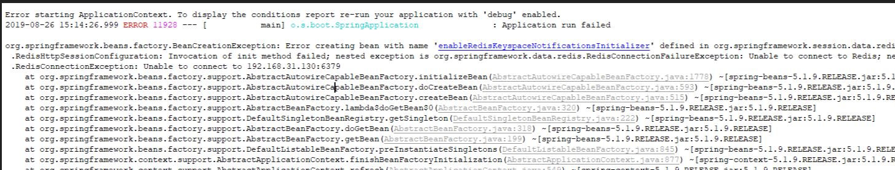
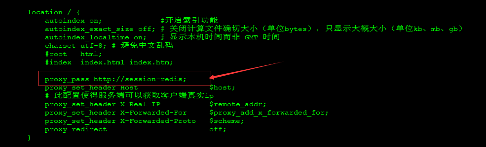
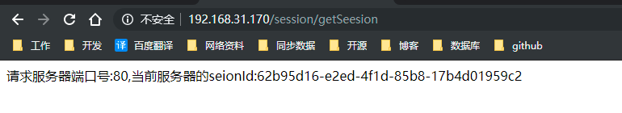
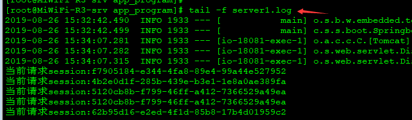
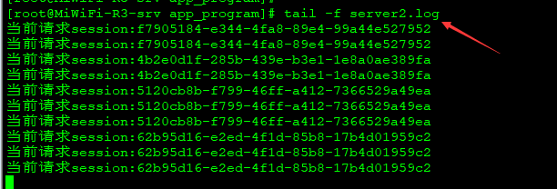
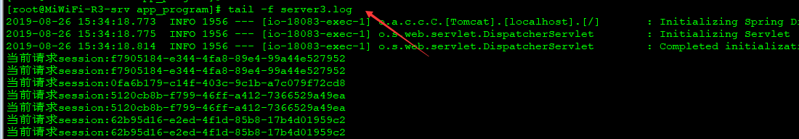
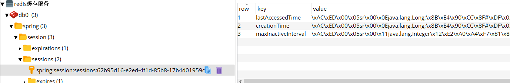

原文出处:本文由博客园博主sunny1009提供。
原文连接:https://www.cnblogs.com/sunny1009/p/11413329.html
原文连接:https://www.cnblogs.com/sunny1009/p/11413329.html
1.创建SpringBoot项目添加依赖
<dependency>
<groupId>org.springframework.session</groupId>
<artifactId>spring-session-data-redis</artifactId>
</dependency>
<dependency>
<groupId>org.springframework.boot</groupId>
<artifactId>spring-boot-starter-data-redis</artifactId>
</dependency>2.完整pomxml文件


<?xml version="1.0" encoding="UTF-8"?>
<project xmlns="http://maven.apache.org/POM/4.0.0" xmlns:xsi="http://www.w3.org/2001/XMLSchema-instance"
xsi:schemaLocation="http://maven.apache.org/POM/4.0.0 https://maven.apache.org/xsd/maven-4.0.0.xsd">
<modelVersion>4.0.0</modelVersion>
<parent>
<groupId>org.springframework.boot</groupId>
<artifactId>spring-boot-starter-parent</artifactId>
<version>2.1.7.RELEASE</version>
<relativePath/> <!-- lookup parent from repository -->
</parent>
<groupId>com.sunny.spring.boot</groupId>
<artifactId>springboot-demo</artifactId>
<version>0.0.1-SNAPSHOT</version>
<name>springboot-demo</name>
<description>Demo project for Spring Boot</description>
<properties>
<java.version>1.8</java.version>
</properties>
<dependencies>
<dependency>
<groupId>org.springframework.boot</groupId>
<artifactId>spring-boot-starter</artifactId>
</dependency>
<dependency>
<groupId>org.springframework.boot</groupId>
<artifactId>spring-boot-starter-web</artifactId>
</dependency>
<dependency>
<groupId>org.springframework.boot</groupId>
<artifactId>spring-boot-starter-test</artifactId>
<scope>test</scope>
</dependency>
<!--session相关-->
<dependency>
<groupId>org.springframework.session</groupId>
<artifactId>spring-session-data-redis</artifactId>
</dependency>
<dependency>
<groupId>org.springframework.boot</groupId>
<artifactId>spring-boot-starter-data-redis</artifactId>
</dependency>
</dependencies>
<build>
<plugins>
<plugin>
<groupId>org.springframework.boot</groupId>
<artifactId>spring-boot-maven-plugin</artifactId>
</plugin>
</plugins>
</build>
</project>3.application.yml配置
redis连接信息需要修改为自己的
spring:
session:
store-type: redis #session的存储方式
redis:
host: 192.168.31.170
port: 6379
password: admin@10094.创建Controller获取session信息
package com.sunny.spring.boot.controller;
import org.slf4j.Logger;
import org.slf4j.LoggerFactory;
import org.springframework.web.bind.annotation.RequestMapping;
import org.springframework.web.bind.annotation.RestController;
import javax.servlet.http.HttpServletRequest;
/**
* @ClassName: SessionController
* @Description: session操作
* @Author: sunt
* @Date: 2019/8/26 14:53
* @Version 1.0
**/
@RequestMapping("/session")
@RestController
public class SessionController {
/**
* 获取session信息
* @param request
* @return
*/
@RequestMapping("/getSeesion")
public String getSeesion(HttpServletRequest request) {
String sessionId = request.getSession().getId();
int serverPort = request.getServerPort();
System.out.println("当前请求session:" + sessionId);
return "请求服务器端口号:" + serverPort + ",当前服务器的seionId:" + sessionId;
}
}5.启动redis服务
6.启动项目并访问
启动如果报如下错误信息，需要检查redis连接信息是否配置准确

本地访问：http://127.0.0.1:8080/session/getSeesion 可以获取到sessionid说明项目可以正常启动和访问，接下来需要配置nginx部署多个应用程序实现负载均衡
7.nginx负载均衡配置
编辑nginx.conf配置文件，需要做如下配置即可
- 在http节点配置所需负载的应用地址
#配置负载地址
upstream session-redis {
server 127.0.0.1:18081 weight=1; #weight是权重的意思，值越大分配访问的概率越大
server 127.0.0.1:18082 weight=3;
server 127.0.0.1:18083 weight=2;
}
- 在server节点下的location配置访问地址
proxy_pass http://session-redis;注意:session-redis必须要与上一步upstream后面的名称保持一致，这个名称无要求自己随意指定

- 校验nginx配置文件是否准确并重新加载nginx配置信息
./sbin/nginx -t
./sbin/nginx -s reload8.部署多个应用程序
按照nginx负载均衡配置，同一个应用程序以18081，18082，18083端口部署三份，并为各自端口分别指定输出日志到server1.log、server2.log、server3.log
nohup java -jar springboot-demo-0.0.1-SNAPSHOT.jar --server.port=18081 > server1.log & nohup java -jar springboot-demo-0.0.1-SNAPSHOT.jar --server.port=18082 > server2.log & nohup java -jar springboot-demo-0.0.1-SNAPSHOT.jar --server.port=18083 > server3.log & 9.测试
浏览器访问默认nginx的80端口，如果可以正常转发到各个应用程序并且访问到每个应用程序的session会话一致说明配置负载和session共享搭建成功
这里本来打算录制个gif操作图，但是录制了好几次都太大只能保存一部分，有好的gif录制麻烦评论区推荐一波，这里就截图展示
通过浏览器访问获取session请求:http://192.168.31.170/session/getSeesion不断刷新,可以看到sever*.log随机输出日志，但是访问到serve1的频率最低(1次)，说明我们配置的权重也生效
页面访问展示

日志文件截图展示



10.查看redis缓存session信息
